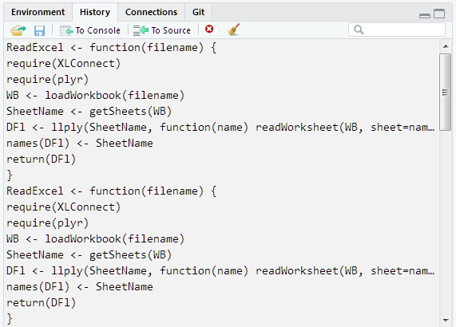
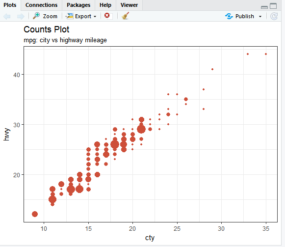
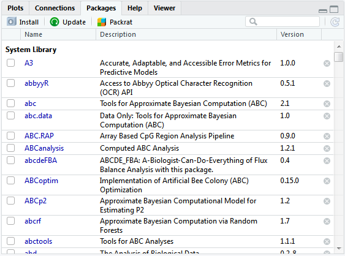
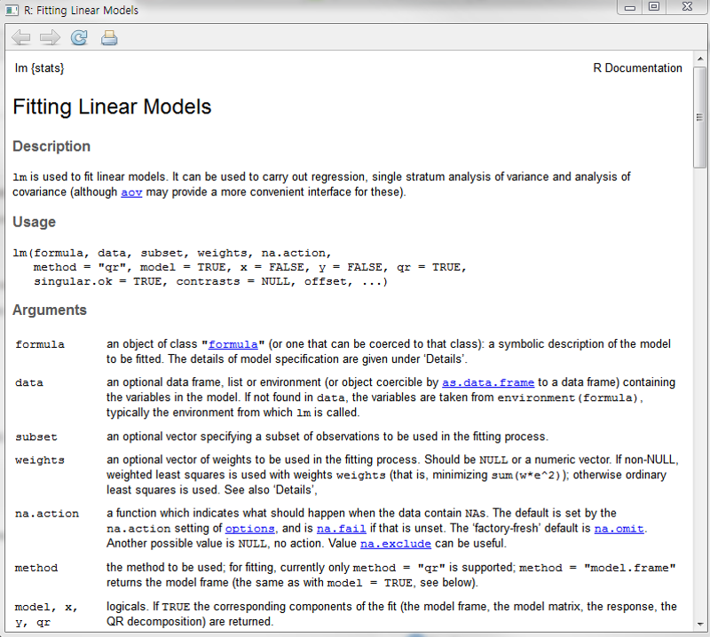
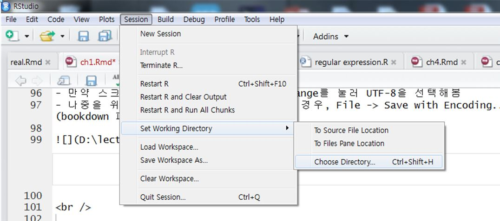
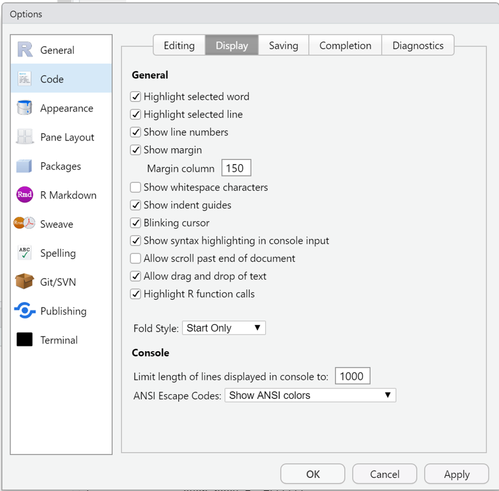
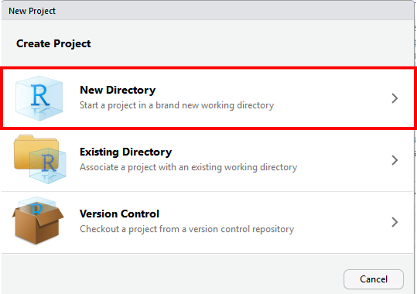
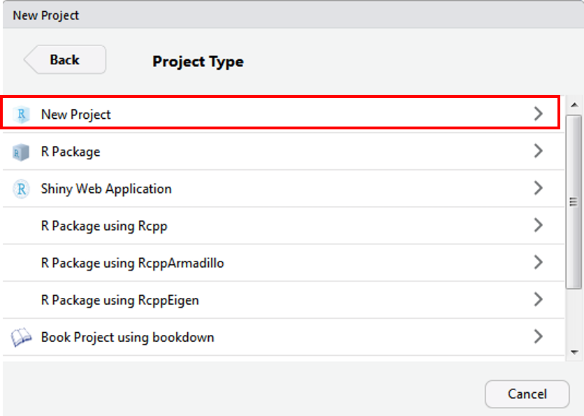
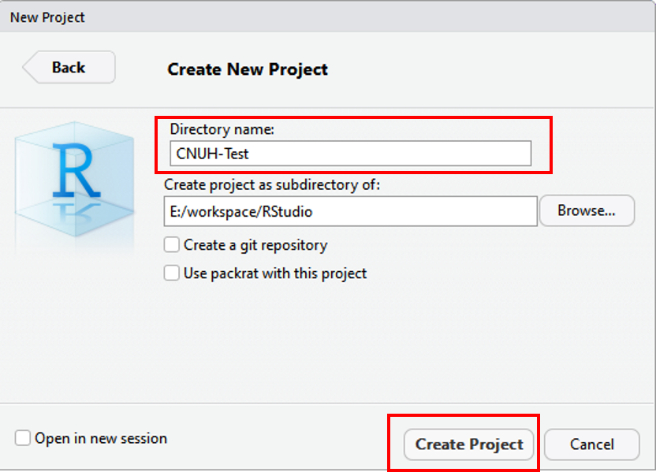

1.4 RStudio
- RStudio: R 통합 분석/개발 환경(integrated development environment, IDE)으로 현재 가장 대중적으로 사용되고 있는 R 사용 환경
- 명령 곤솔 외 파일 편집, 데이터 객체, 명령 기록(.history), 그래프 등에 쉽게 접근 가능
- RStudio 독자적인 개발 환경 제공: Rmarkdown, Rnotebook, Shiny Web Application 등 다양한 R 환경을 제공
- 버전관리(git, subversion)를 통해 project 관리 가능
- 무료 및 유료 소프트웨어 제공
1.4.1 RStudio 설치하기
- 웹 브라우저를 통해 https://rstudio.com 접속 후 상단 DOWNLOAD 링크 클릭

Desktop 또는 Server 버전 중 택일
- 서버용 설치를 위해서는 Server 클릭 \(\rightarrow\) 소규모 자료 분석용으로는 불필요
- 여기서는 Desktop 버전 선택 후 다음 링크로 이동

- 운영체제에 맞는 Rstudio installer 다운로드(여기서는 Windows 버전 다운로드)

- RStudio installer 다운로드 시 파일이 저장된 폴더에서 보통
RStudio-xx.xx.xxx.exe형식의 파일명 확인- 더블 클릭 후 실행
- [다음>] 몇 번 클릭 후 설치 종료

- 바탕화면 혹은 시작 프로그램에 새로 설치된 RStudio 아이콘 클릭 후 아래와 같은 프로그램 창이 나타나면 설치 성공

1.4.2 RStudio IDE 화면 구성
RStudio는 아래 그림과 같이 4개 창으로 구성4

Figure 1.4: RStudio 화면구성: 우하단 그림은 http://r-statistics.co/Top50-Ggplot2-Visualizations-MasterList-R-Code.html 에서 발췌
1. 콘솔(console)
- R 명령어 실행공간(RGui, 정확하게는 R 설치 디렉토리에서 “~/R/R.x.x/bin/x64/Rterm.exe” 가 구동되고 있는 공간)
- R script 또는 콘솔 창에서 작성한 명령어(프로그램) 실행 및 그 결과 출력
- 경고, 에러/로그 등의 메세지 확인

Figure 1.5: RStudio 콘솔창에서 명령어 실행 후 출력결과 화면
2. 스크립트(script) (Figure 1.6)
- R 명령어 입력 공간으로 일괄처리(batch processing) 가능
- 새로운 스크립트 창 열기
- 아래 그림과 같이 pull-down 메뉴 좌측 상단 아이콘 클릭 후 [R script] 선택
[File]\(\rightarrow\)[New File]\(\rightarrow\)[R Script]선택- 단축 키:
[Ctrl] + [Shift] + [N]
- 일괄 명령어 처리를 위한 RStudio 제공 단축 키
[Ctrl] + [Enter]: 선택한 블럭 내 명령어 실행[Alt] + [Enter]: 선택 없이 커서가 위치한 라인의 명령어 실행
- R 스크립트 이외 R Markdown, R Notebook, Shiny web application 등 새 문서의 목적에 따라 다양한 종류의 소스 파일 생성 가능
- 저장된 R 스크립트 파일은
파일명.R로 저장됨 - 파일 실행 방법
- 실행하고자 하는 파일을 읽은 후(
[File]\(\rightarrow\)[Open File]+ 파일명 선택 또는파일명.R더블 클릭) 입력된 모든 라인을 선택한 뒤[Ctrl] + [Enter] - 파일 읽은 후
[Ctrl] + [Shift] + [S](현재 열려있는*.R파일에 대해) 또는[Ctrl] + [Shift] + [Enter]
- 실행하고자 하는 파일을 읽은 후(

Figure 1.6: RStudio 스크립트 새로 열기
RStudio는 코딩 및 소스 작성의 효율성을 위해 여러 가지 단축 키를 제공하고 있음. 단축키는 아래 그림과 같이 pull down 메뉴 [Tools] 또는 [Help]에서 [Keyboard shortcut help] 또는 [Alt] + [Shift] + [K] 단축키를 통해 확인할 수 있음. 또는 Rstudio cheatsheet에서 단축키에 대한 정보를 제공하는데 pull down 메뉴 [Help] \(\rightarrow\) [Cheatsheets] \(\rightarrow\) [RStudio IDE Cheat Sheet]을 선택하면 각 아이콘 및 메뉴 기능에 대한 개괄적 설명 확인 가능함.
3. 환경/명령기록(Environment/History) (Figure 1.7)
- Environment: 현재 R 작업환경에 저장되어 있는 객체의 특성 및 값 등을 요약 제시
- 좌측 아래 화살표 버튼 클릭: 해당 객체의 상세 정보 확인
- 우측 사각형 버튼 또는 객체(데이터셋명) 클릭: 객체가 데이터셋(데이터프레임)인 경우 스프레드 시트 형태로 데이터셋 확인
Figure 1.7: RStudio Environment 창 객체 상세 정보 및 스프레드 시트 출력 결과
- History: R 콘솔에서 실행된 명령어(스크립트)들의 이력 확인

4. File/Plots/Packages/Help/Viewer
- File: Windows 파일 탐색기와 유사한 기능 제공
- 파일 및 폴더 생성, 삭제/파일 및 폴더명 수정, 그리고 작업경로 설정

- Plots: 생성한 그래프 출력
- 작업 중 생성한 그래프 이력이 Plots 창에 저장: \(\leftarrow\) 이전, \(\rightarrow\) 최근
Zoom: 클릭 시 해당 그래프의 팝업창이 생성되고 팝업창의 크기 조정을 통해 그래프의 축소/확대 가능Export: 선택한 그래프를 이미지 파일(.png,.jpeg,.pdf등)로 저장할 수 있고, 클립보드로 복사 가능

- Packages: 현재 컴퓨터에 설치된 R 패키지 목록 출력
- 신규 설치 및 업데이트 가능

- Help:
help(topic)입력 시 도움말 창이 출력되는 공간

1.4.3 RStudio 환경 설정
Pull-down 메뉴에서 [Tools] \(\rightarrow\) [Global Options...]를 선택

General: RStudio 운용 관련 전반적 설정 세팅
Figure 1.8: R General option 팝업 창
- R version: 만약 컴퓨터에 두 개 이상 다른 R 버전이 설치되어 있는 경우
[Change]클릭 후 설정 변경 가능 - Default Working directory: 작업 디렉토리 지정([
Browse] 클릭 후 임의 폴더 설정 가능) - Restore most recently opened project at startup: RStudio 실행 시 가장 최근에 작업한 프로젝트로 이동
- Restore previously open source documents at startup: RStudio 실행 시 현재 프로젝트에서 가장 최근에 작업한 소스코드 문서를 함께 열어줌.
- Restore .RData into workspace at startup: 작업 디렉토리에 존재하는
.RData파일을 RStudio 실행 시 불러옴 - Save workspace to .RData on exit: R workspace 자동 저장(
.RData) 여부 - Always save history (even when not saving .RData) : R 실행 명령 history 저장 여부(Always/Never/Ask)
- Remove duplicate entries in history: history 저장 시 중복 명령 제거 여부
작업폴더(Working Directory)는 현재 R session에서 사용하는 기본 폴더로서 R 소스파일 및 데이터의 저장 및 로딩시 기본이 되는 폴더임.
- 소스파일이나 데이터를 불러들일 때 작업 폴더에 있는 파일은 경로명을 지정하지 않고 파일명만 사용해도 됨
- 작업폴더가 아닌 곳에 있는 파일을 불러들일 때는 경로명까지 써 주어야함.
- R 데이터를 저장할때도 파일명만 쓰면 기본적으로 작업폴더에 저장되며, 다른 폴더에 저장하기 위해서는 경로명까지 써 주어야 함.
처음 컴퓨터에 RStudio를 설치하면 Working directory는 Windows 사용자 폴더(예: user)의 Document 폴더가 기본값으로 설정되어 있음. 기본 작업폴더를 변경하려면 Figure 1.8에서 설정 가능.
현재 R session의 작업 디렉토리 설정 방법
[Session] -> [Set Working Directoy] -> [Choose Directory]에서 설정

R 콘솔에서 다음과 같은 명령어로 작업폴더를 확인 및 변경 가능
[1] "D:/Current-Workspace/Lecture/cnu-r-programming-lecture-note"[1] "D:/Current-Workspace/Lecture"[1] "D:/"[1] "D:/Current-Workspace/Lecture"[1] "D:/Current-Workspace/Lecture/misc"[1] "D:/Current-Workspace/Lecture/cnu-r-programming-lecture-note"R에서 디렉토리 또는 폴더 구분자는 / 임. Windows에서 사용하는 구분자는 \인데, R에서 \는 특수문자로 간주하기 때문에 Windows 의 폴더명을 그대로 사용 시 에러 메세지를 출력함. 이를 해결하기 위해 Windows 경로명을 그대로 복사한 경우 경로 구분자 \ 대신 \\로 변경
C:\r-project를 컴퓨터에 생성 후 해당 폴더를 default 작업폴더로 설정
Code: Editing: 들여쓰기, 자동 줄바꿈 등 코드 편집에 대한 전반적 설정

- Insert spaces for tab:
[Tab]키를 눌렀을 때 공백(space) 개수 결정(본 강의노트:Tab width = 4) - Auto-detect code indentation: 코들 들여쓰기 자동 감지
- Insert matching parens/quotes: 따옴표, 괄호 입력 시 커서를 따옴표/괄호 사이로 자동 이동
- Auto-indent code after paste: 코드 복사 시 들여쓰기 일괄 적용
- Vertically align arguments in auto-indent: 함수 작성 시 들여쓰기 레벨 유지 여부
- Soft-wrap R source file: 스크립트 편집기 너비를 초과하는 경우 R 코드 행을 자동 줄바꿈
- Continue comment when inserting new line: 주석 표시를 다음 행에도 자동 적용 여부
- Surround selection on text insertino: 스크립트 상 text 선택 후 자동 따옴표 및 괄호 적용 여부
- Focus console after executing from source: 스크립트 실행 후 커서 위치를 콘솔로 이동 여부
Code: Display: 스크립트(소스) 에디터 표시 화면 설정

- Highlight selected word: 스크립트 내 text 선택 시 동일한 text에 대해 배경강조 효과 여부
- Highlight selected line: 선택된 행에 대해 배경 강조효과 여부
- Show line numbers: 행 번호 보여주기 여부
- Show margin: 소스 에디터 오른 쪽에 지정한 margin column 보여주기 여부
- Show whitespace characters: 에디터에 공백 표시 여부
- Show indent guides: 현재 들여쓰기 열 표시 여부
- Blinking cursor: 커서 깜박임 여부
- Show syntax highlighting in console output: 콘솔 입력 라인에 R 구문 강조 표시 적용 여부
- Allow scroll past end of document: 문서 마지막 행 이후 스크롤 허용 여부
- Allow drag and drop of text: 선택한 복수의 행으로 구성된 text에 대해 마우스 drag 허용
- Highlight R function calls: R 내장 및 패키지 제공함수에 대해 강조 여부
Code: Saving: 스크립트(소스) 에디터 저장 설정

- Ensure that source file end with newline
- String trailing horizontal whitespace when saving
- Restore last cursor position when opening file
- Default text encoding: 소스 에디터의 기본 설정 인코딩 설정 변경
- RStudio의 Windows 버전 기본 text encoding은
CP949임 - Linux나 Mac OS의 경우 한글은
UTF-8로 인코딩이 설정되어 있음. - R 언어는 Linux 환경에서 개발되었기 때문에
UTF-8인코딩과 호환성이 더 좋음 - 스크립트 파일의 한글이 깨질 때는
[File] -> [Reopen with Encoding...]에서 encoding 방식 변경
- RStudio의 Windows 버전 기본 text encoding은
Appearance: RStudio 전체 폰트, 폰트 크기, theme 설정

- 본인의 취향에 맞게 폰트 및 테마(theme) 설정
- 취향 \(\rightarrow\) 가독성이 제일 좋고 편안한 theme
Pane Layout: RStudio 구성 패널들의 위치 및 항목 등을 수정/추가/삭제(4개 페널은 항시 유지)

1.4.4 RStudio 프로젝트
- 프로젝트
- 물리적 측면: 최종 산출물(문서)를 생성하기 위한 데이터, 사진, 그림 등을 모아 놓은 폴더
- 논리적 측면: R session 및 작업의 버전 관리
- 프로젝트의 필요성
- 자료의 정합성 보장
- 다양한 확장자를 갖는 파일들이 한 폴더 내에 뒤섞일 때 곤란해 질 수 있음
- 실제 분석 및 그래프 생성에 사용한 정확한 프로그램 또는 코드 연결이 어려움
- 좋은 프로젝트 구성을 위한 방법
- 원자료(raw data)의 보호: 가급적 자료를 읽기 전용(read only) 형태로 다루기
- 데이터 정제(data wrangling 또는 data munging)를 위한 스크립트와 정제 자료를 보관하는 읽기 전용 데이터 디렉토리 생성
- 작성한 스크립트로 생성한 모든 산출물(테이블, 그래프 등)을 “일회용품”처럼 처리 \(\rightarrow\) 스크립트로 재현 가능
- 한 프로젝트 내 각기 다른 분석마다 다른 하위 디렉토리에 출력결과 저장하는 것이 유용
- RStudio 새로운 프로젝트 생성
- RStudio의 강력하고 유용한 기능
- 새로운 프로젝트 생성: RStudio 메뉴에서
[File]\(\rightarrow\)[New Project]선택하면 아래와 같은 팝업 메뉴 생성

- 위 그림에서
New Directory를 선택하면 아래와 같은 팝업 창이 나타나면 아래와 같은 프로젝트 유형이 나타남. 여기서는New Project선택

- 다음 팝업창에서 새로운 프로젝트의 폴더명을 지정 후
Create Project클릭- 아래
[Create projects as subdirectories of]에서 생성하고자 하는 프로젝트의 상위 디렉토리 설정 \(\rightarrow\) 보통 RStudio의 기본 작업폴더로 설정
- 아래

- 현재 R session 종료 후 새로운 프로젝트로 session 화면이 열리면 프로젝트 생성 완료
실습: 프로젝트 생성
- 위에서 설정한 작업폴더 내에
학번-r-programming프로젝트 생성 - 생성한 프로젝트 폴더 내에
docs,figures,script폴더 생성
각 창의 위치는 세팅 구성에 따라 달라질 수 있음. 창 구성 방법은 RStudio 환경 옵션 설정에서 설명함.↩